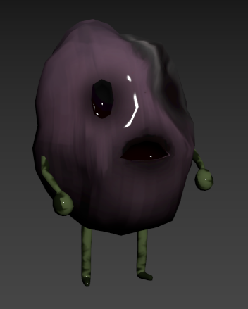
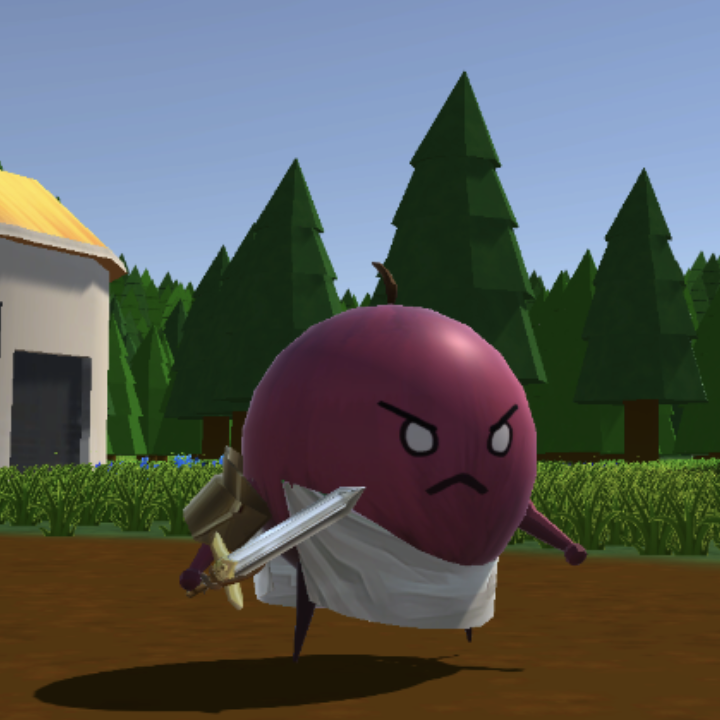

-

Enemy AI Development
For this project I designed and implemented pathfinding, behavior trees, and attack mechanisms for multiple enemy types, including Basic Rotten Grape Enemies, Exploding Rotten Grape Enemies, The Grape Boss, Carrot Khan, Carrot Soldier Enemies, and Carrot Lieutenants.
Rotten enemies video
I also programmed distinct enemy phases based on HP, enhancing the game's challenge and variety.
Carrot Khan boss fight video -

Player Interaction and Abilites
Developed an AutoLock system for player targeting, optimizing engagement through distance algorithms.
Player Combat Video
Programmed seeds to unlock and retain player abilities, ensuring a seamless progression experience.
Integrated skills from seeds into the UI for a cohesive gameplay flow.
Player Ability Video -
Environment and Animation Integration
Integrated enemies and bosses into the game environment, aligning their animations with attacks for a polished visual experience.
Potato King fight
Implemented loading screens between worlds, enhancing the overall game structure.
Loading Screen Video -

User Interface (UI) and Scripting
Scripted UI elements for NPCs, Ability wheel, and HealthBar, contributing to a user-friendly interface.
Assisted in the development of scripts for doors to open after clearing enemy rooms, enhancing game progression.
Room clear video -

Git Hub Management
Actively contributed to the team's collaborative efforts by teaching Git usage and resolving merging issues.
-

Additional Contributions
Created VFX for player abilities using UNITY's particle system. Implemented and bug fixed non-enemy NPCs.
-

What I learned
Dee is a full stack developer who started her career in finance. She can jump from Rails to React to Go, and also manage our finances.
@deequez